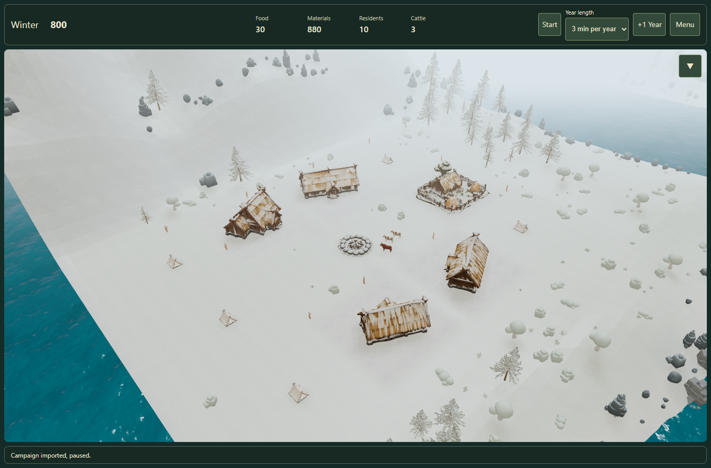
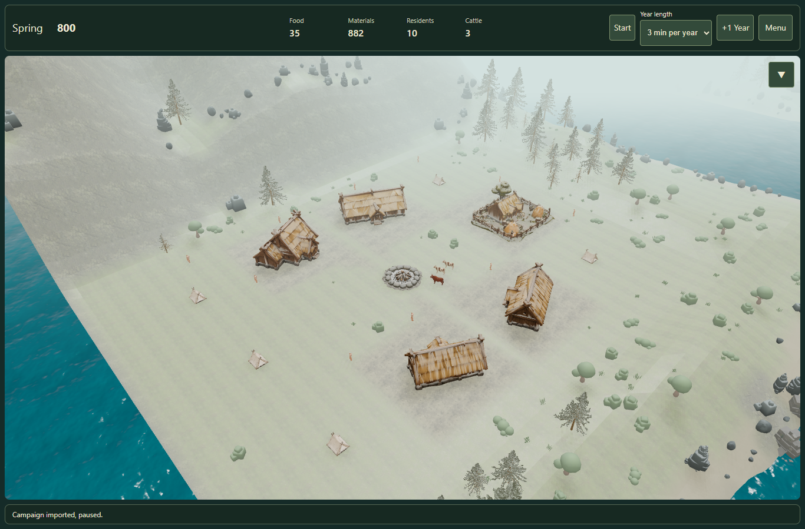
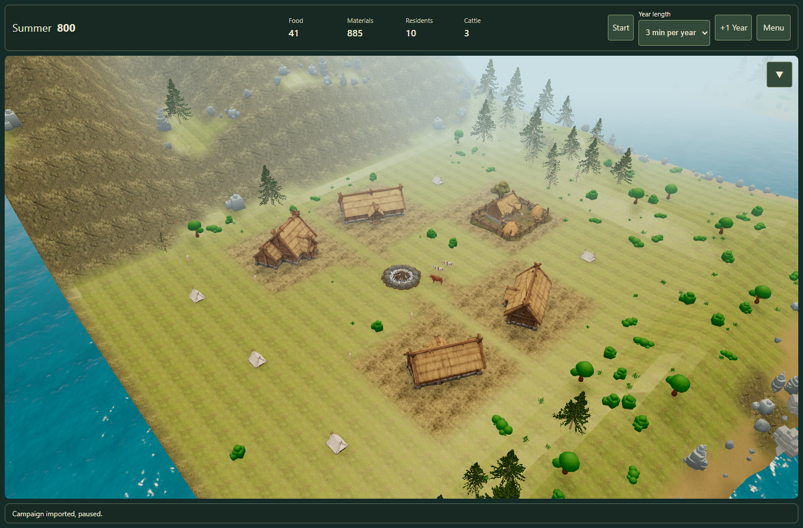

Seasonal houses, tents and campfire
The same settlement and camera in Winter, Spring thaw and Summer. Roofs, tent slopes,
Farmyard surfaces and the upper surfaces of the fire ring receive snow. Vertical timber
retains its original colour. Seasonal light and fog remain visible.
Open the settlement · Validation report

Winter — full snow remains through the beginning of Spring.

Spring — snow fades together with the surrounding environment.

Summer — the original material colours return.
Colour overlay; no simulated snow depth or flame animation. Tested with real Edge/WebGL
and touch emulation, not a physical iPad.